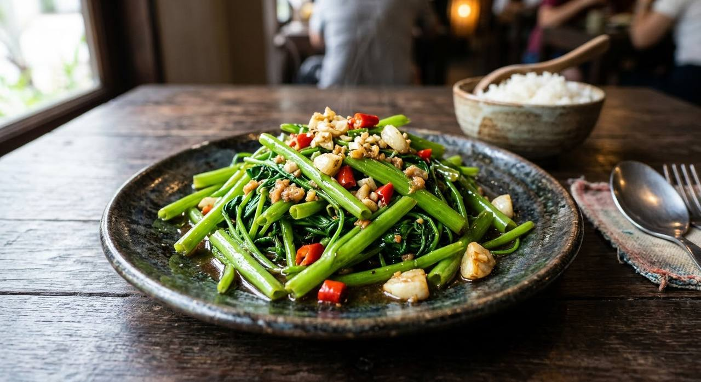

Morning glory thrown into a wok so hot the flames climb the rim — garlic, chillies, tao jiao, thirty seconds, done. The dish of the porridge shops.

ไฟแดง means "red fire" — and the name describes the cook, not the food. In every khao tom (rice porridge) shop in Thailand, the moment you order ผัดผักบุ้งไฟแดง the wok cook turns up the flame until the fire climbs the rim of the wok, and the greens are in and out in thirty seconds. It's the dish that separates a real wok cook from a stir-fry tourist, because there is nothing to hide behind: one vegetable, one hot pan, no time.
The vegetable is ผักบุ้ง — Chinese water spinach, hollow-stemmed and quick-cooking, and the whole trick is speed. The garlic and chillies are pounded coarse and hit the oil first; the greens follow with the seasonings already mixed into them — the source's move — so nothing waits while the pan screams. เต้าเจี้ยว, tao jiao, the fermented soybean paste, is the quiet character: salty, savoury, faintly fermented, it does in a spoonful what stock cubes wish they could.
The result is what the source promises: greens that keep their crunch while the stems go glossy with sauce. Served next to plain rice porridge — the crisp counterpoint to the softest bowl on the menu.
| Thai | English | Amount |
|---|---|---|
| ผักบุ้งจีน | Chinese water spinach | 1 bunch |
| กระเทียม (ตำกับพริกหยาบๆ) | Garlic, pounded coarse with the chillies | 1–2 heads |
| พริกแดง | Red chillies | 6 |
| เต้าเจี้ยว | Tao jiao fermented soybean paste | 1 tbsp |
| ซอสหอยนางรม | Oyster sauce | 1 tbsp |
| ซีอิ๊วขาว | White soy — or 1 tbsp fish sauce, the other source's seasoning | 1 tsp |
| น้ำตาลทราย | Sugar | 1 tsp |
| น้ำเปล่า | Water | 2 tbsp |
| น้ำมัน | Oil | 2 tbsp |
Tao jiao vs fish sauce. The shop version seasons with tao jiao plus oyster sauce (TrueID); the home version uses fish sauce plus oyster sauce (Wongnai). The tao jiao is the deeper, more "shop" flavour.
Garlic amount. One to two heads in the shop version against two cloves in the home one. The shop wants to taste the garlic; the home version keeps it polite. Both published.
Chilli count. Six red chillies (TrueID) to two to four (Wongnai). The name promises fire — the cook decides how red.
When to season. The shop version pre-mixes the sauce into the greens; the home version seasons in the wok. Pre-mixing is the speed trick — at full fire there's no time to reach for bottles.
The greens. ผักบุ้งจีน — the hollow-stemmed Chinese water spinach — is the dish. The pointy-leaved Thai variety (ผักบุ้งไทย) is softer and used more in soups.
This recipe is translated from the following Thai-language sources. Where they disagree, we've said so.
1. TrueID (Mai's Kitchen) — "สูตรทำ ผัดผักบุ้งไฟแดง กร๊อบกรอบ เหมือนร้านข้าวต้ม" (the shop version: tao jiao, pre-mixed sauce, the screaming wok) — food.trueid.net
2. Wongnai (กินไม่อ้วน) — "ผัดผักบุ้งไฟแดง เมนูเร่งรีบ งบน้อย แต่อร่อยมาก" (the home version with fish sauce) — wongnai.com